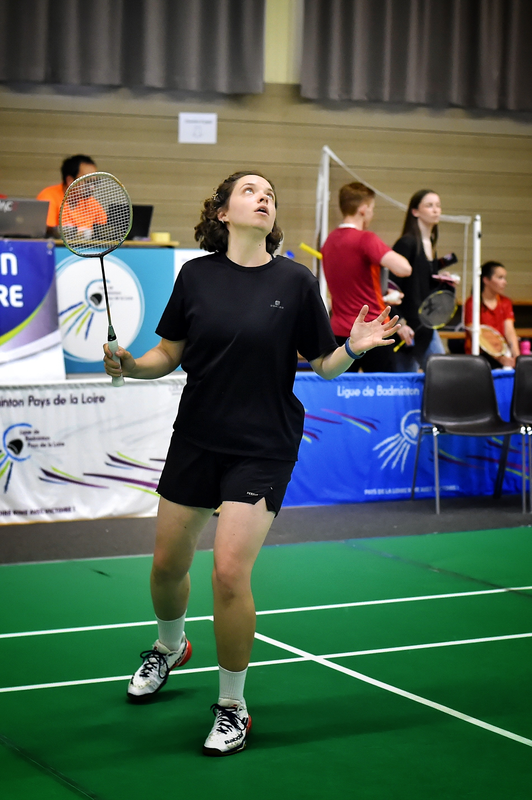
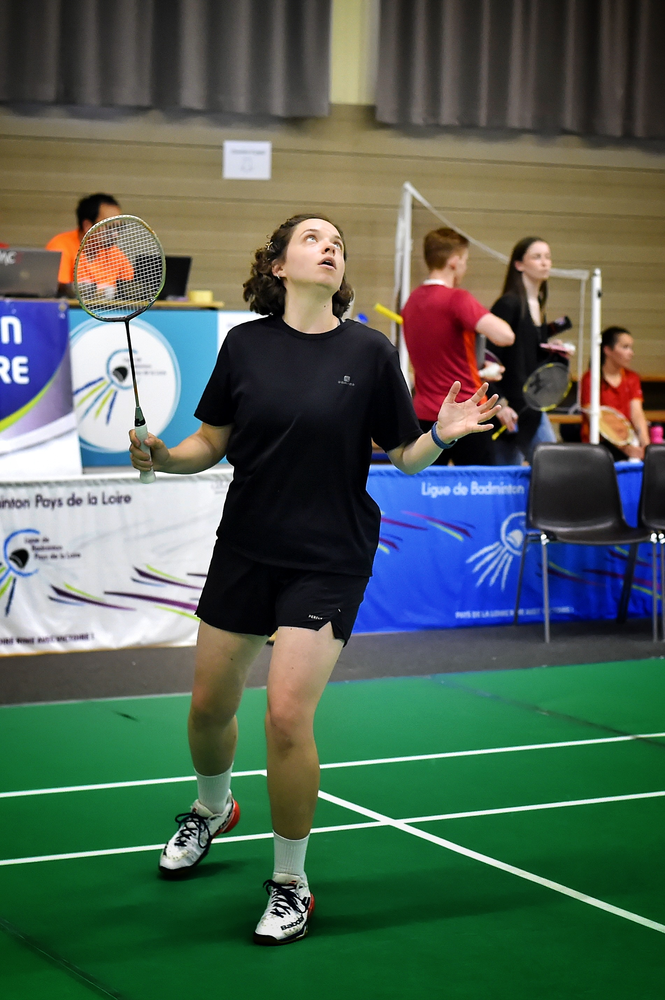

Mon CV Interactif
Agée de 29 ans et en reconversion vers l’informatique, je prépare un BTS SIO option SLAM dès la rentrée 2025. Curieuse, rigoureuse et persévérante, je recherche une alternance me permettant d’explorer différents aspects du développement (web, logiciel, bases de données, etc). Mon objectif à terme : devenir développeuse full stack polyvalente.
BTS SIO option SLAM
Ecole Studi / Digital Campus
Disponible à partir de septembre/octobre
Master MEEF 2d degré Mathématiques
INSPE Angers (49)
2022-2023
Licence Mathématiques
Université Paris 8 Vincennes - Saint-Denis (93)
2019-2022
Baccalauréat Mathématiques - option Physique Chimie
Lycée Duplessis-Mornay (49)
2011-2015
Assistante Administrative
INSTITUT POUR LA SANTE DE L'OUEST (44)
Avril 2024 - Aujourd'hui
- Recrutement d'infirmiers libéraux pour des campagnes de prévention
- Suivi du processus de formation des infirmiers
- Création de fichiers Excel et suivi de planning
- Gestion d'une boîte mail partagée, coordination interservice
Service d'admission
Centre de réadaptation et rééducation LES CAPUCINS - Angers (49)
Eté 2024
- Accueil physique et téléphonique
- Ouverture de dossiers, facturation, comptabilité simple
Réserviste - Assistante Administrative
Université Paris 8 Vincennes - Saint-Denis (93)
2019-2022
- Recrutement, gestion de candidats
- Utilisation avancée d’Excel, rédaction de contrats
- Suivi des différents secteurs de recrutement chargé des recrutements
- Gestion d’une boîte mail partagée
AED en PREPROFESSIONNALISATION
COLLÈGE ELSA TRIOLET SAINT-DENIS (93)
COLLÈGE FRANÇOIS RABELAIS ANGERS (49)
2020-2023
HÔTESSE D’ACCUEIL ET EMPLOYÉE POLYVALENTE
- Recrutement, gestion de candidats
- Utilisation avancée d’Excel, rédaction de contrats
- Suivi des différents secteurs de recrutement chargé des recrutements
- Gestion d’une boîte mail partagée
J’aime immortaliser les instants du quotidien ou de mes voyages. Je travaille avec différents outils (appareils photo relfex, smartphones) et différents sites de retouches (snapseed, GIMP).
J'ai commencé depuis peu à poster mes prises de vues sur INSTAGRAM afin de (peut-être même un peu) toucher le coeur des gens avec un coucher de soleil ou un petit veau curieux.
Mon souhait :
partager au monde la vision que j'ai, au quotidien, sur tout ce qui m'entoure, même les plus petits êtres vivants (sauf les araignées...).
Vous trouverez, ici, quelques-uns de mes clichés mais il y en a bien plus sur mon compte INSTAGRAM alors n'hésitez pas à y faire un petit tour.

.jpg)


Pratiqué depuis 6 ans maintenant,j'ai commencé en club depuis un an. Ce sport est une de mes grandes passions et, loin d'égaler le niveau d'Elsa Jacob, c'est une source de défoulement et de dépassement de soi très important dans mon quotidien.

 

- La pâtisserie
- Le bricolage
- Les films d’action et d’animation
- Excel
- Mes chats
- Faire des blagues et jeux de mots
- Le chant
- La NBA (ne me posez pas trop de questions, c'est tout récent je commence tout juste à comprendre les règles. mais les matchs sont très prenants...)